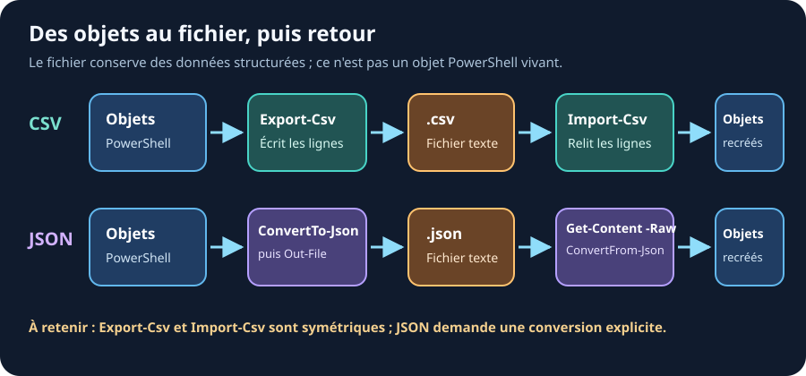

17. Export et Import
Ressources du chapitre - Exercices pratiques - Mémo des commandes
Du pipeline au fichier, puis retour aux objets

Un fichier stocke du texte structuré, pas des objets PowerShell
vivants. À la lecture, Import-Csv ou
ConvertFrom-Json recrée des objets que l'on peut filtrer dans le
pipeline.
CSV : Le format tableur
Exporter en CSV
# Exporter des processus dans un CSV
Get-Process | Export-Csv -Path "C:\Logs\processus.csv"
# Sans la ligne de type #TYPE en tete de fichier
Get-Process | Export-Csv -Path "C:\Logs\processus.csv" -NoTypeInformation
# Avec encodage UTF-8 (caractères spéciaux)
Get-Service | Export-Csv -Path "C:\Logs\services.csv" -NoTypeInformation -Encoding UTF8
-NoTypeInformation: encore utile ? - PowerShell 5.1 : sans ce paramètre, le fichier commence par une ligne parasite#TYPE System.Diagnostics.Processqui gêne Excel. Il est donc nécessaire. - PowerShell 7 : ce comportement est le défaut, le paramètre ne sert plus à rien. Il reste accepté (sans effet) pour que les anciens scripts continuent de fonctionner.En formation on le garde par réflexe : vos scripts resteront compatibles 5.1, ce qui est encore le PowerShell installé par défaut sur beaucoup de serveurs.
Importer un CSV
# Importer et stocker
$donnees = Import-Csv -Path "C:\Logs\processus.csv"
# Afficher comme un tableau
Import-Csv "C:\Logs\processus.csv" | Format-Table
# Filtrer après import
Import-Csv "C:\Logs\services.csv" | Where-Object Status -eq "Running"
Créer un CSV manuellement
$pirates = @(
[PSCustomObject]@{ Nom="Luffy"; Prime=3000000000; Ile="Elbaf" }
[PSCustomObject]@{ Nom="Zoro"; Prime=1111000000; Ile="Wano" }
[PSCustomObject]@{ Nom="Nami"; Prime=366000000; Ile="Arlong Park" }
)
$pirates | Export-Csv "C:\Logs\pirates.csv" -NoTypeInformation
JSON : Le format web
Exporter en JSON
# Convertir en JSON
Get-Process | Select-Object Name, Id, CPU | ConvertTo-Json
# Sauvegarder dans un fichier
Get-Service | Select-Object Name, Status |
ConvertTo-Json |
Out-File "C:\Logs\services.json"
Importer un JSON
# Lire et convertir
$donnees = Get-Content "C:\Logs\services.json" -Raw | ConvertFrom-Json
# Accéder aux données
$donnees[0].Name
$donnees | Where-Object Status -eq "Running"
Exemple : Sauvegarder une config
# Créer une config
$config = @{
Version = "1.0"
Serveur = "QG-Marine"
SeuilCPU = 80
SeuilRAM = 90
Alertes = $true
}
# Sauvegarder
$config | ConvertTo-Json | Out-File "config.json"
# Recharger plus tard
$configChargee = Get-Content "config.json" -Raw | ConvertFrom-Json
Write-Host "Seuil CPU : $($configChargee.SeuilCPU)%"
Comparaison CSV vs JSON
| Format | Avantages | Cas d'usage |
|---|---|---|
| CSV | Lisible dans Excel, simple | Listes de données tabulaires |
| JSON | Données imbriquées, web | Config, APIs, objets complexes |
À retenir
-
✅
Export-Csv:-NoTypeInformationest déjà le défaut en PowerShell 7 - ✅
Import-Csvretourne des objets directement manipulables - ✅
ConvertTo-Json/ConvertFrom-Jsonpour le JSON -
✅ Combinez
ConvertTo-JsonavecOut-Filepour sauvegarder
Lien - Export-Csv